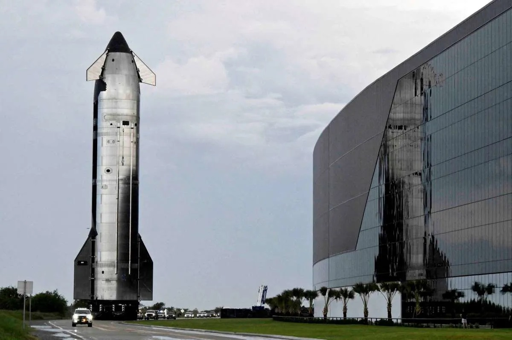

Pernahkah kamu melihat peluncuran roket ke luar angkasa? Menurutmu, bagaimana roket bisa terangkat tinggi padahal tidak ada "lantai" atau benda yang dipijak di udara, apalagi di ruang hampa?
Perhatikan peristiwa berikut.
Pada Agustus 2025, roket raksasa Starship berhasil meluncur ke luar angkasa dengan menyemburkan gas hasil pembakaran bahan bakar ke arah bawah dengan kecepatan sangat tinggi. Roket tersebut tetap dapat bergerak naik meskipun setelah berada di luar atmosfer, udara hampir tidak ada.
Saat tahap pertama roket (booster) berpisah dari tahap atasnya, kedua bagian tersebut terlihat saling menjauh ke arah yang berlawanan dengan cepat.
Peristiwa ini menimbulkan pertanyaan penting: bagaimana roket dapat bergerak ke atas tanpa "mendorong udara", dan mengapa dua bagian roket bergerak saling menjauh saat berpisah?

Untuk memahami peristiwa tersebut, kita perlu mempelajari Hukum III Newton.
Hukum III Newton menyatakan bahwa:
Untuk setiap aksi, selalu ada reaksi yang sama besar dan berlawanan arah.
Artinya, jika suatu benda memberikan gaya pada benda lain, maka benda kedua akan memberikan gaya yang besarnya sama tetapi arahnya berlawanan pada benda pertama.
Perlu dipahami bahwa:
💡 Ingat: aksi dan reaksi bukan saling meniadakan karena bekerja pada benda yang berbeda!
Saat roket diluncurkan, mesin roket menyemburkan gas panas berkecepatan tinggi ke arah bawah. Gas tersebut terdorong ke bawah oleh gaya dari mesin roket.
Sebagai reaksi, gas memberikan gaya yang sama besar tetapi berlawanan arah pada roket, yaitu ke arah atas. Gaya inilah yang disebut gaya dorong (thrust) dan menyebabkan roket terangkat.
Roket tidak "mendorong udara", melainkan mendorong gas hasil pembakaran yang keluar dari mesinnya sendiri. Oleh karena itu, roket tetap dapat bergerak di ruang hampa karena yang terlibat dalam aksi–reaksi adalah roket dan gas buangnya, bukan roket dan udara luar.
Pada saat pemisahan tahap roket, mekanisme pemisah mendorong kedua bagian roket. Ketika tahap atas memberikan gaya pada booster, booster memberikan gaya reaksi yang sama besar dan berlawanan arah. Akibatnya, kedua bagian bergerak saling menjauh.
✨ Fenomena ini sepenuhnya sesuai dengan prinsip aksi–reaksi dalam Hukum III Newton.
Banyak orang beranggapan bahwa roket dapat terbang karena "mendorong udara". Anggapan ini kurang tepat.
Jika roket hanya bergantung pada udara, maka roket tidak akan bisa bergerak di ruang hampa. Faktanya, roket tetap dapat melaju di luar angkasa karena yang terjadi adalah interaksi antara roket dan gas hasil pembakarannya sendiri.
Kesalahan lain adalah mengira bahwa gaya aksi lebih besar daripada gaya reaksi ketika roket bergerak naik. Padahal menurut Hukum III Newton, kedua gaya selalu sama besar. Roket dapat naik karena gaya dorong ke atas mengatasi gaya berat roket, bukan karena gaya reaksinya lebih besar daripada aksinya.
Untuk memperjelas konsep aksi–reaksi, perhatikan eksperimen virtual tentang interaksi dua benda.
Pada simulasi perahu yang didayung, ketika dayung mendorong air ke belakang (aksi), air memberikan gaya reaksi pada dayung ke arah depan. Akibatnya, perahu bergerak maju.
Panah merah menunjukkan gaya aksi, sedangkan panah biru menunjukkan gaya reaksi. Keduanya muncul bersamaan, sama besar, dan berlawanan arah.
Dalam simulasi lain, interaksi dua benda yang saling menekan atau bertumbukan juga menunjukkan bahwa setiap gaya selalu memiliki pasangan reaksinya.
🔗 Fenomena pada perahu dan pada roket memiliki prinsip yang sama. Ketika roket mendorong gas ke bawah, gas mendorong roket ke atas. Dengan demikian, eksperimen virtual membantu kita memahami bahwa gerak roket ke atas merupakan akibat langsung dari pasangan gaya aksi–reaksi sesuai dengan Hukum III Newton.